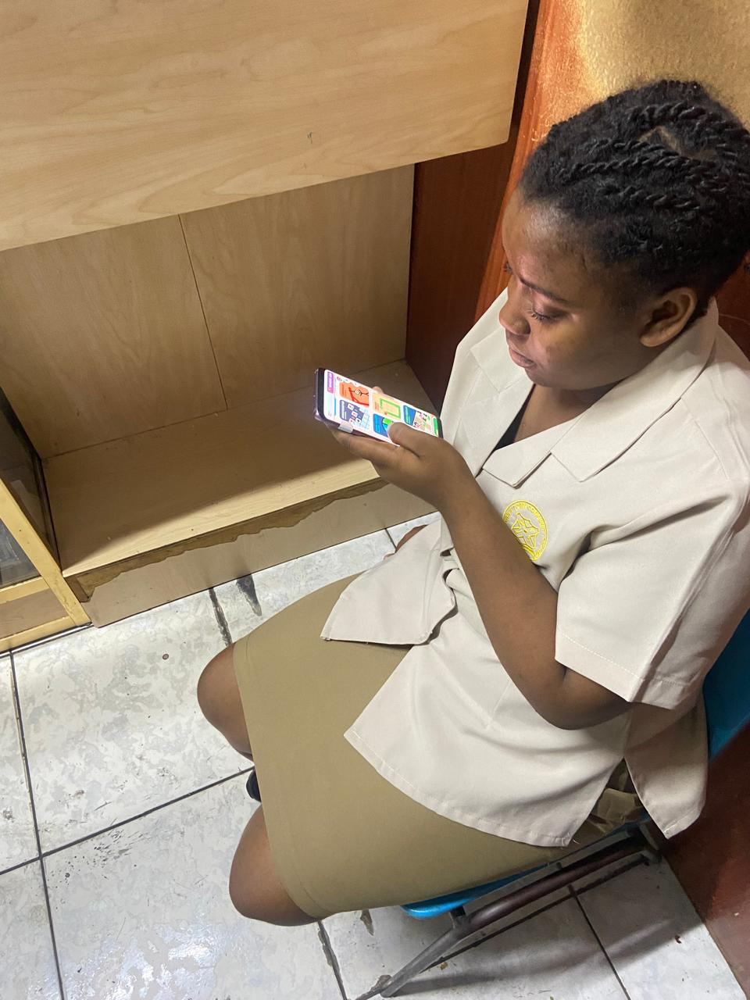
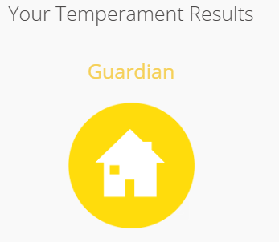

Traits, Emotion and Hobby
Strongest Trait: Overthinking
Impact on Academic Life: Overthinking is a double-edged sword for me. While it can help me thoroughly analyze situations and make informed decisions, it often leads to procrastination. I tend to dwell on every assignment, worrying about the details and outcomes, which can paralyze my ability to start working. This hesitation results in me pushing tasks until the last minute, requiring late-night study sessions to catch up. Unfortunately, the lack of sleep from these late nights often causes me to feel tired during the day, making it difficult to stay alert and focused in class. This cycle of overthinking, procrastination, and exhaustion affects my overall academic performance and well-being.
Emotion: Anxiety
Impact on Academic Life: My anxiety can sometimes hinder my performance during exams or presentations. It often manifests as self-doubt, making it challenging to showcase my true abilities. However, I actively practice mindfulness techniques to manage this and build confidence in my academic pursuits.
In this audio clip from my presentation, you can hear the anxiety in my voice as I discuss the topic. Click play to listen:
Hobby: Gaming
Impact on Academic Life: Gaming not only sharpens my strategic thinking and problem-solving abilities but also serves as a therapeutic escape from academic pressures. When the stress of school becomes overwhelming, immersing myself in a game allows me to unwind and recharge. It’s a chance to step away from the demands of coursework and engage in a world where I can explore, create, and achieve. This escape helps me manage my stress and come back to my studies with a fresh perspective. Gaming is more than just a hobby for me; it’s a vital way to relax and find balance. By incorporating gaming into my routine, I’ve discovered that it can make learning more enjoyable. Instead of seeing study sessions as tedious, I can apply the same excitement I feel while gaming to my academic pursuits, keeping me motivated and in a positive mindset for my classes.
My Hero: Optimus Prime
Quote: “Freedom is the right of all sentient beings.”
Why I Chose Optimus Prime: Optimus Prime is not just a leader among the Autobots; he represents the values of courage, sacrifice, and the relentless pursuit of justice. His unwavering commitment to protecting others, regardless of the cost, inspires me to stand up for what is right in my own life. Optimus embodies resilience and moral integrity, making him a true role model. He teaches us that leadership is not merely about power; it’s about serving others and making difficult choices for the greater good. His ability to inspire his team and rally them in the face of adversity demonstrates the importance of unity and trust. His journey also highlights the significance of selflessness and the impact one individual can have in creating change. I find myself reflecting on his principles during challenging moments, reminding me to act with honor and integrity, much like he does. In a world often clouded by negativity, Optimus serves as a beacon of hope, motivating me to be a positive force in my community.
Memorable Scene
One of the most powerful scenes in the Transformers movie is when Optimus Prime faces Megatron in a fierce battle to protect Earth. Despite being heavily outnumbered, he fights valiantly, showing that true strength lies in one’s conviction. In this intense showdown, he not only battles for survival but also embodies the spirit of perseverance. His fierce dedication to safeguarding humanity, even when the odds are stacked against him, resonates deeply with my own beliefs about facing challenges head-on. The way he rallies his allies and inspires them to keep fighting is a testament to the importance of hope and camaraderie. As he stands up against seemingly insurmountable odds, I am reminded that true leadership is about standing firm in one's beliefs, even in the face of great danger. This scene reinforces my understanding that courage often means taking risks for what we believe in, making Optimus Prime a lasting symbol of heroism in my life.
Personality Test Results
Personality Type: Guardian
Reflection on Test Validity
The personality test identified me as a Guardian, which resonates strongly with my personal experiences and values. Guardians are known for their reliability, responsibility, and dedication to supporting others. I find that these traits are reflected in my approach to both academics and personal relationships. While the test provides valuable insights into my strengths, such as being dependable and organized, I also recognize that it may not capture the full complexity of my personality. However, it serves as a solid foundation for understanding my role in collaborative settings and my commitment to personal growth.